Benchmark / Use cases / Drainage networks / Results / cop-dem-glo30-20
cop-dem-glo30-20
Compression ratio and stream_f1
Each point is a bound on the root-mean-square error, written next to it in metres, on this sample.
GeoZL PIVCOGeoZL PFORJPEG XL
Decoded stream networks
The result on the compressed copy at each error bound, in metres.on both within one celllostnew
GeoZL PIVCO
GeoZL PFOR
 RMSE ≤ 0.1 m, measured 0.0818
RMSE ≤ 0.1 m, measured 0.0818
4.3× · stream_f1 +0.950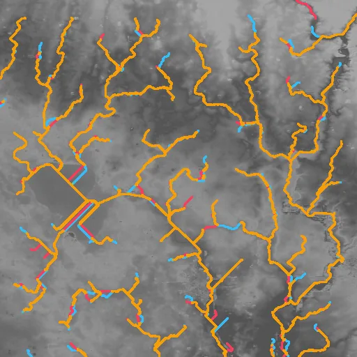
RMSE ≤ 0.2 m, measured 0.2
5.8× · stream_f1 +0.871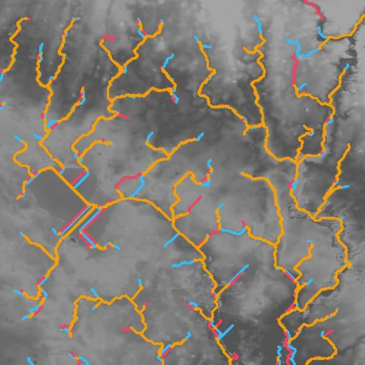
RMSE ≤ 0.4 m, measured 0.374
6.8× · stream_f1 +0.769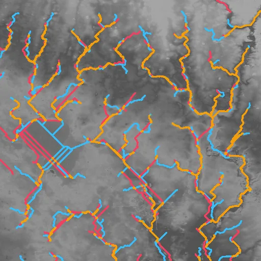
RMSE ≤ 0.8 m, measured 0.78
7.5× · stream_f1 +0.517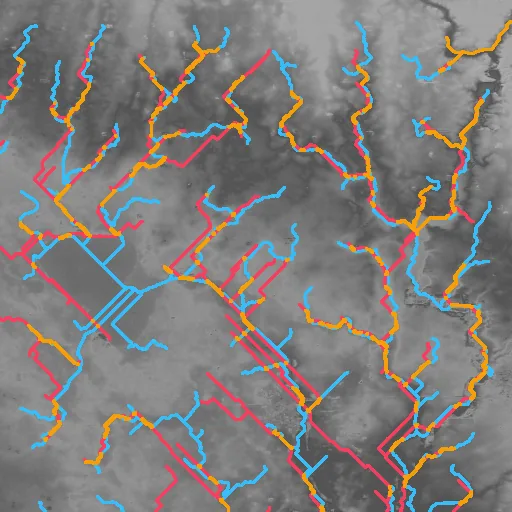
RMSE ≤ 1.6 m, measured 1.58
11.4× · stream_f1 +0.364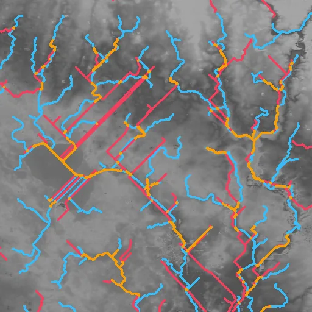
RMSE ≤ 3.2 m, measured 3.13
21.3× · stream_f1 +0.287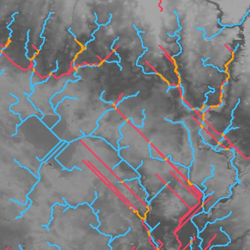
RMSE ≤ 6.4 m, measured 5.78
47.5× · stream_f1 +0.121JPEG XL
 RMSE ≤ 0.1 m, lossless
RMSE ≤ 0.1 m, lossless
4.0× · stream_f1 +1.000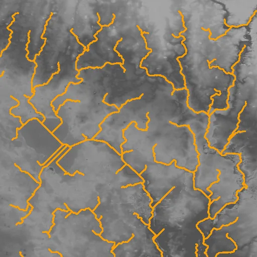
RMSE ≤ 0.2 m, lossless
4.0× · stream_f1 +1.000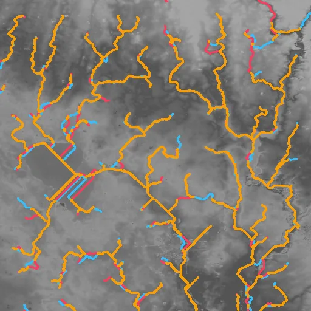
RMSE ≤ 0.4 m, measured 0.398
26.6× · stream_f1 +0.821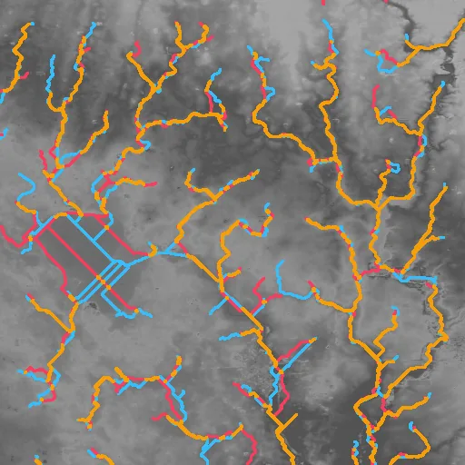
RMSE ≤ 0.8 m, measured 0.794
101.4× · stream_f1 +0.619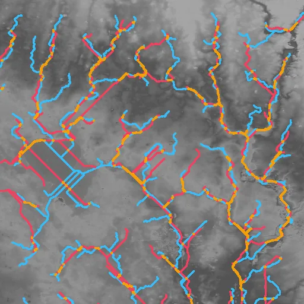
RMSE ≤ 1.6 m, measured 1.59
328.1× · stream_f1 +0.299 RMSE ≤ 3.2 m, measured 2.4
RMSE ≤ 3.2 m, measured 2.4
1162.5× · stream_f1 +0.162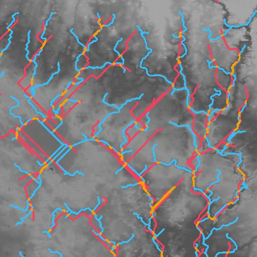
RMSE ≤ 6.4 m, measured 2.4
1162.5× · stream_f1 +0.162